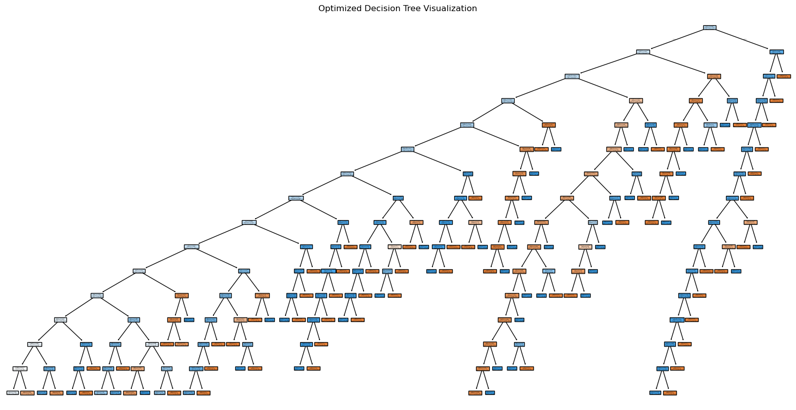

import pandas as pd
import numpy as np
from sklearn.feature_extraction.text import TfidfVectorizer
from sklearn.tree import DecisionTreeClassifier, plot_tree
from sklearn.metrics import classification_report, accuracy_score
from sklearn.model_selection import cross_val_score, GridSearchCV, validation_curve
import matplotlib.pyplot as plt4. Modeling – Binary Class Prediction on Text Political Lean
TF-IDF Vectorizer
# Load training data
file_path_train_lean = "data/processed-data/train_lean.csv"
train_data = pd.read_csv(file_path_train_lean)
train_data = train_data.dropna(subset=['Text', 'Political Lean']) # Drop rows with NaN in targetted columns
# Select features and target
X_train_text = train_data['Text']
y_train = train_data['Political Lean']
# Text vectorization (TF-IDF)
tfidf_vectorizer = TfidfVectorizer(max_features=5000, stop_words='english')
X_train = tfidf_vectorizer.fit_transform(X_train_text)Cross Validation
# Define hyperparameter grid for Decision Tree
param_grid = {
'max_depth': [10, 15, 20, 25, 30, 50, None], # Adjust depth of the tree
'min_samples_split': [2, 5, 10, 20, 50], # Minimum samples required to split a node
'min_samples_leaf': [1, 2, 5, 10, 20], # Minimum samples required at a leaf node
'criterion': ['gini', 'entropy'] # Criterion for splitting
}
# Initialize Decision Tree classifier
clf = DecisionTreeClassifier(random_state=5000)
# Perform GridSearchCV for hyperparameter tuning
grid_search = GridSearchCV(clf, param_grid, cv=5, scoring='accuracy', n_jobs=-1)
grid_search.fit(X_train, y_train)
# Output best parameters from GridSearchCV
print("Best parameters found: ", grid_search.best_params_)
print("Best cross-validation score: {:.4f}".format(grid_search.best_score_))
# Perform cross-validation on the best estimator found by GridSearchCV
cv_scores = cross_val_score(grid_search.best_estimator_, X_train, y_train, cv=5, scoring='accuracy')
print("Cross Validation Results:")
print(f"Accuracy Scores: {cv_scores}")
print(f"Mean Accuracy: {cv_scores.mean():.4f}")
print(f"Standard Deviation: {cv_scores.std():.4f}")
# Train the best model on the full training set
best_clf = grid_search.best_estimator_
best_clf.fit(X_train, y_train)Best parameters found: {'criterion': 'gini', 'max_depth': 15, 'min_samples_leaf': 1, 'min_samples_split': 2}
Best cross-validation score: 0.6540
Cross Validation Results:
Accuracy Scores: [0.63580247 0.65843621 0.64197531 0.65979381 0.6742268 ]
Mean Accuracy: 0.6540
Standard Deviation: 0.0137DecisionTreeClassifier(max_depth=15, random_state=5000)In a Jupyter environment, please rerun this cell to show the HTML representation or trust the notebook.
On GitHub, the HTML representation is unable to render, please try loading this page with nbviewer.org.
DecisionTreeClassifier(max_depth=15, random_state=5000)
Visualization and Evaluation
# Visualize the trained decision tree
plt.figure(figsize=(20, 10))
plot_tree(best_clf, feature_names=tfidf_vectorizer.get_feature_names_out(), class_names=best_clf.classes_, filled=True)
plt.title("Optimized Decision Tree Visualization")
plt.show()
# Model evaluation (on training data)
y_train_pred = best_clf.predict(X_train)
print("Training Set Evaluation:")
print(classification_report(y_train, y_train_pred))
print("Training Accuracy:", accuracy_score(y_train, y_train_pred))
Training Set Evaluation:
precision recall f1-score support
Conservative 0.94 0.48 0.63 957
Liberal 0.74 0.98 0.84 1471
accuracy 0.78 2428
macro avg 0.84 0.73 0.74 2428
weighted avg 0.82 0.78 0.76 2428
Training Accuracy: 0.7821252059308073Prediction
# Load test data
file_path_text_topic = "data/processed-data/text_topic.csv"
test_data = pd.read_csv(file_path_text_topic)
test_data = test_data.dropna(subset=['text'])
# Use the same vectorizer
X_test_text = test_data['text']
X_test = tfidf_vectorizer.transform(X_test_text)
# Predict on test data
predictions = best_clf.predict(X_test)
# Add predictions to the test set
test_data['dt_lean'] = predictions
# Save predictions
file_path_text_lean = "data/processed-data/text_lean.csv"
df_text_lean = test_data
df_text_lean.to_csv(file_path_text_lean, index=False)
print(f"Modeling complete. Results saved to {file_path_text_lean}")
df_text_lean.head(6)Modeling complete. Results saved to data/processed-data/text_lean.csv| subreddit | id | type | depth | score | time | text | nmf_topic | dt_lean | |
|---|---|---|---|---|---|---|---|---|---|
| 0 | Libertarian | 1hf706u | submission_hot | 0 | 100 | 2024/12 | road serfdom new libertarian economic let borr... | abortion | Conservative |
| 1 | Libertarian | m29svuv | comment | 1 | 1 | 2024/12 | fredrich bastiat also good actually make funct... | abortion | Liberal |
| 2 | Libertarian | m2a5co6 | comment | 2 | 1 | 2024/12 | libertarian exclusively anarchist | abortion | Conservative |
| 3 | Libertarian | m2a694w | comment | 3 | 1 | 2024/12 | true socialist communist always say fix ideolo... | abortion | Conservative |
| 4 | Libertarian | m29bopi | comment | 1 | 7 | 2024/12 | good favorite always recommend start revolutio... | abortion | Liberal |
| 5 | Libertarian | m2a1cm0 | comment | 1 | 1 | 2024/12 | salma write book become movie star | abortion | Liberal |